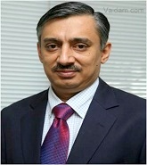

Dr. Manish Banker
QUALIFICATIONS
Director , MBBS, MD, Diploma, 22 years of experience
ABOUT DOCTOR
Dr. Manish Banker is a renowned infertility specialist in India.
With a thriving experience of 22+ years, he has successfully treated over 15,000 cases of infertility across the country.
He has completed his MBBS & MD (Gold Medalist while pursuing MD) from the Gujrat University. Following which he did a diploma in IVF from University of Giel, Germany.
He is the regional representative to the International Committee for Monitoring ART, a WHO affiliate.
He also sits on the surveillance board of International Federation of Fertility Societies and International Affairs committee of the American Society of Reproductive Medicine.
Dr. Banker is currently a member of the draft committee for ART Bill of India & has been publishing the National ART Registry of India for 10 years.
He has numerous publications in indexed journals and has contributed to chapters in various textbooks.
His area of interest lies in IVF & ART treatments.
SPECIALIZATION :
IVF
ICSI
IUI
Natural cycle IVF
Egg Donor
Artificial Insemination
Egg donor program
WORK EXPERIENCE
Director, Nova IVI Fertility, Ahmedabad
List Of Treatments
IVF,
Intracytoplasmic Sperm Injection Procedure ICSI,
Frozen Embryo Transfer (FET),
Transvaginal Oocyte Retrieval (TVOR) (Oocyte Retrieval),
Tubal Embryo Transfer (TET) Procedure,
GIFT and ZIFT Procedure,
Blastocyst Culture and Transfer,
Fertility Surgeries,
Fibroid Removal Surgery,
Myomectomy Surgery,
Operative Laparoscopy,
Laparoscopic Vaginal Hysterectomy,
Laparoscopic supra cervical Hysterectomy,
Total Laparoscopic Hysterectomy,
Laparoscopic Tubal Ligation.
Viedo 1
Video 2